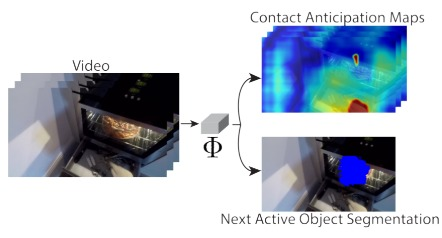
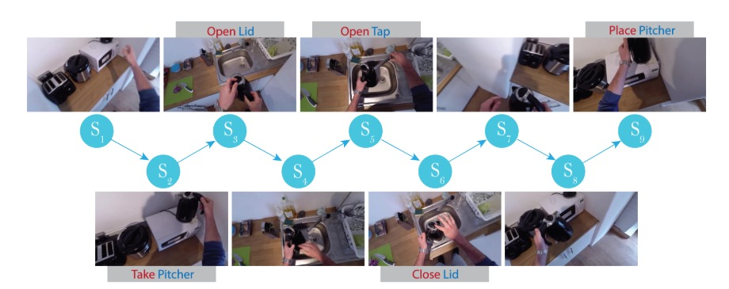
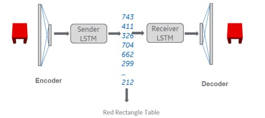
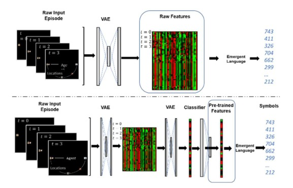
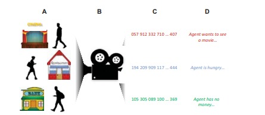
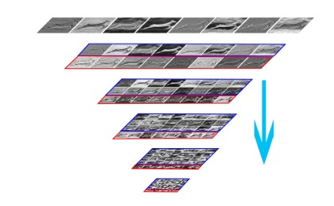

|
Chinmaya DevarajI am a Ph.D. candidate in Electrical and Computer Engineering at the University of Maryland College Park, advised by Prof. Yiannis Aloimonos and Dr. Cornelia Fermuller. My broad field of research is Computer vision and Generative AI. I have contributed to pioneering projects in text-image generation, video-text models, and zero-shot action recognition, holding a patent and multiple publications. My research topics include Multimodal language modeling, video representation learning, vision-language models, LLMs, and action recognition. |

|
ResearchMy research topics include Multimodal language modeling, video representation learning, vision-language models, LLMs, and action recognition. I am seeking full-time roles in the industry to leverage my expertise for transformative advancements in AI and technology. |

|
Diving Deep With Video-Text Models in Representing Motion
Chinmaya Devaraj, Cornelia Fermuller, Yiannis Aloimonos, Accepted ACL Findings 2024 |

|
Incorporating Visual Grounding In GCN For Zero-shot Learning Of Human Object Interaction Actions
Chinmaya Devaraj, Cornelia Fermuller, Yiannis Aloimonos, CVPRW 2023 |
|

|
Forecasting action through contact representations from first person video.
Eadom Dessalene*, Chinmaya Devaraj*, Michael Maynord*, Cornelia Fermuller, Yiannis Aloimonos (* indicates equal contribution) IEEE Transactions on Pattern Analysis and Machine Intelligence |
|

|
Egocentric object manipulation graphs.
Eadom Dessalene, Michael Maynord, Chinmaya Devaraj, Cornelia Fermuller, Yiannis Aloimonos arxiv |
|

|
From Symbols to Signals : Symbolic Variational Autoencoders
Chinmaya Devaraj, AritraChowdhury, ArpitJain, JamesR.Kubricht, PeterTu, AlbertoSantamaria-Pang ICASSP 2020 |
|

|
Emergent Languages from Pretrained Embeddings Characterize Latent Concepts in Dynamic Imagery.
James Kubricht, Alberto Santamaria-Pang, Chinmaya Devaraj, Aritra Chowdhury, Peter Tu arxiv |
|

|
Towards semantic action analysis via emergent language.
Alberto Santamaria-Pang, James R. Kubricht, Chinmaya Devaraj, Aritra Chowdhury, Peter Tu IEEE International Conference on Artificial Intelligence and Virtual Reality (AIVR) 2019. |
|

|
Evenly Cascaded Convolutional Networks.
Chengxi Ye, Chinmaya Devaraj, Michael Maynord, Peter Tu, Cornelia Fermuller, Yiannis Aloimonos The 1st International Workshop on Big Visual Dataset Construction, Management and Applications, IEEE Big Data 2018. Best Student Paper Award. |